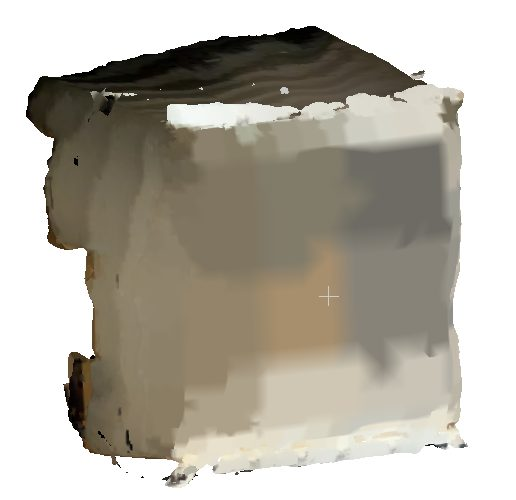
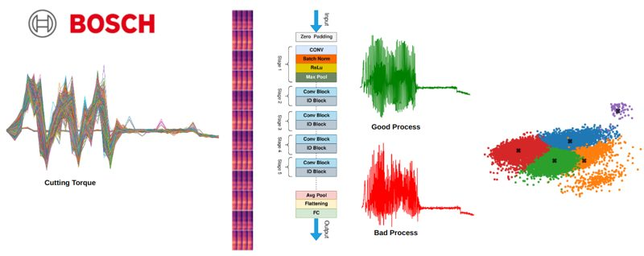
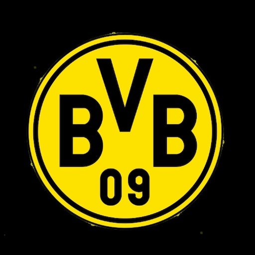
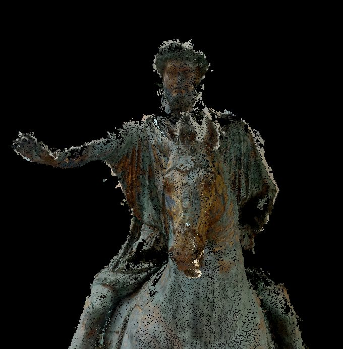
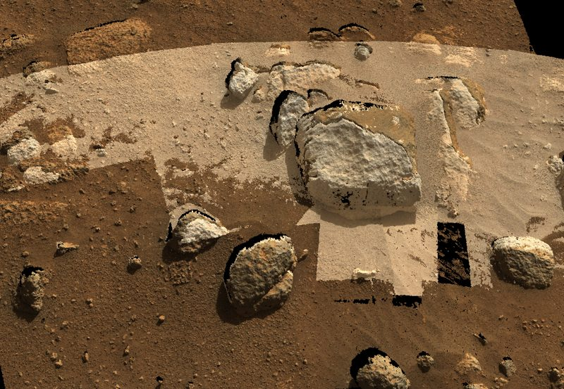
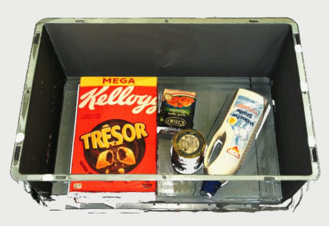
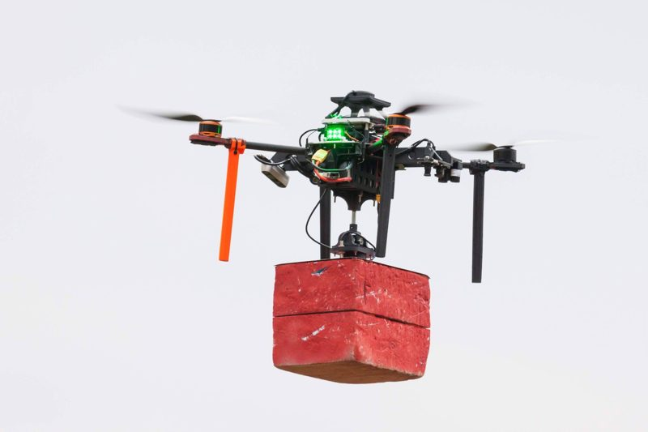
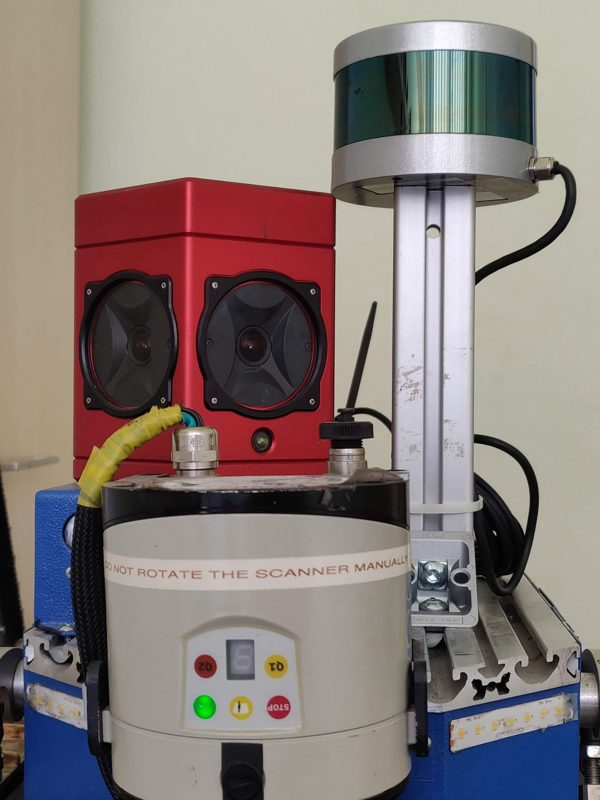

Project Portfolio
Free Volume Estimation using Monocular Vision in Logistics
Master's thesis: a computer-vision pipeline that estimates the free volume inside shipping containers from a single phone image, replacing costly manual measurement. The work fine-tunes monocular depth estimators on domain-specific data, reconstructs watertight meshes from single-image point clouds, and benchmarks against traditional methods — showing monocular depth is viable for real logistics and supply-chain efficiency.
{kind=link}

Anomaly Detection in Time-Series Data for Wire-Cutting
Predictive maintenance for wire-cutting machinery. We analyse spectrograms of high-frequency torque data to train neural networks that classify and predict anomalies, using t-SNE and clustering to surface failure patterns — enabling timely maintenance and reliable production systems.
{kind=link}

Generative-AI Solutions for Borussia Dortmund (BvB)
A design-thinking and digital-innovation project with BvB's online merchandising team. We built and presented a working prototype on Microsoft Azure (Language Studio): a chatbot that collects feedback, answers product questions, and helps customers pick the right sizes — balancing customer need, market potential, and technical feasibility.
{kind=link}

Multi-View SfM for Historic Artifacts
An open-source Structure-from-Motion pipeline for reconstructing Roman artifacts captured on mobile devices — letting students and archaeologists worldwide access and examine museum pieces from Rome in 3D.
{kind=link}

Stereo Reconstruction of Martian Geology
Building 3D mesh models of the Martian surface from the engineering cameras of Perseverance (Mars 2020) and Curiosity (MSL). The work spanned image processing and 3D reconstruction via stereo and multi-view SfM, fused the result with a Digital Elevation Model, and integrated it into a VR experience.
{kind=link}

Industrial Bin Picking
A vision-based bin-picking system for industrial robotics. I built the computer-vision, grasping, and point-cloud pipelines on detectron2, using RGB-D data from a Zivid camera for precise recognition and localization, and helped create the DoPose dataset via an Iterative Closest Point (ICP) model-generation pipeline.
{kind=link}

Grasping Mechanism for UAVs — MBZIRC 2020
Bachelor's thesis: an active, reliable grasping mechanism for autonomous UAVs to build cooperative walls for the Mohamed Bin Zayed International Robotics Challenge 2020. The team placed first, with a short paper published in Springer's Lecture Notes in Computer Science (LNCS).
{kind=link}

LIDAR Integration for NIFTi
With the Vision for Robotics and Autonomous Systems (VRAS) group on the NIFTi EU project: integrating a Velodyne VLP-16 LiDAR onto a ground robot so it could perform SLAM and localize accurately under low-visibility, hazardous conditions for search-and-rescue.
{kind=link}
